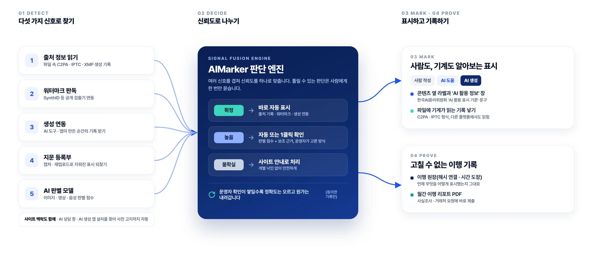

탐지 · 판단 · 표시 · 기록,
네 단계가 자동으로 돌아갑니다
사이트를 한 번 연결하면 새 콘텐츠가 올라올 때마다 아래 과정이 자동으로 일어납니다. 운영자는 애매한 것만 한 번 확인하면 됩니다.

다섯 겹 신호로 찾습니다
싼 신호부터 차례로 확인하고, 같은 파일은 한 번만 판정합니다. 그래서 빠르고, 비용이 적게 듭니다.
출처 정보 읽기
파일 속 C2PA · IPTC · XMP 기록과 생성 도구가 남긴 흔적을 읽습니다.
- 강한 곳
- AI 도구가 만든 파일을 그대로 올렸을 때
워터마크 판독
생성 도구가 넣은 보이지 않는 워터마크를 공개된 검출 수단으로 확인합니다.
- 강한 곳
- 캡처 · 압축 뒤에도 대부분 남음
생성 연동
AI 상세페이지 · 모델 이미지 · 글쓰기 도구가 만든 순간의 기록을 연동으로 받습니다.
- 강한 곳
- 기록 없는 파일도 연동 도구로 만들었다면
지문 등록부
한 번 표시한 콘텐츠의 지문을 등록해 두고, 캡처 · 재업로드로 다시 올라오면 표시를 되찾습니다.
- 강한 곳
- 기록이 지워진 채 다시 올라왔을 때
AI 판별 모델
이미지 · 영상 · 음성의 AI 생성 가능성을 점수로 냅니다. 다른 근거가 없을 때 1클릭 확인에 씁니다.
- 강한 곳
- 처음부터 기록이 없을 때
사이트 맥락
AI 상담 창 · AI 생성 앱 설치처럼 콘텐츠 밖의 단서도 찾아, 상담 창 사전 고지까지 자동으로 붙입니다.
- 강한 곳
- AI 기능을 고객에게 직접 제공할 때
확실할 때만 자동, 애매하면 한 번 묻습니다
판별은 틀릴 수 있고 표시 책임은 운영자에게 있습니다. 그래서 근거의 세기에 따라 처리 방식을 나눕니다.
| 판단 | 근거 | 처리 | 운영자 할 일 |
|---|---|---|---|
| 확정 | 출처 기록 · 워터마크 · 생성 연동 · 등록부 일치 | 바로 자동 표시 | 없음 |
| 높음 | 판별 점수 + 보조 근거 | 운영자가 고른 방식: 자동 표시 또는 1클릭 확인 | 정한 기간 안에 버튼 한 번 |
| 불확실 | 근거가 약하거나 서로 엇갈림 | 개별 표시 없이 사이트 전체 'AI 활용 안내' | 없음 |
사람도, 기계도 알아보는 표시
방문자가 보는 'AI 성분표'와, 다른 플랫폼에서도 읽히는 파일 속 표시를 함께 붙입니다.
사람 작성
사람이 직접 만들었고, AI는 맞춤법 · 번역 확인처럼 거들기만 했습니다.
HumanAI 도움
사람이 만들되 초안 · 보정 · 배경 등 일부에 AI를 사용했고, 사람이 확인했습니다.
AI-assistedAI 생성
내용의 대부분을 AI로 만들었습니다. 사람이 확인했더라도 이 단계로 밝힙니다.
AI-generated보이는 표시
콘텐츠 옆 라벨과 'AI 활용 정보' 창에 확인 근거 · 사람 확인 · 기록 번호를 보여 줍니다.
기계가 읽는 표시
파일에 C2PA · IPTC 형식의 기록을 넣어, 다른 플랫폼과 검색에서도 AI 생성 여부가 읽히게 합니다.
기준 자동 반영
법이나 표시 기준이 바뀌면 연결된 모든 사이트의 문구 · 모양이 자동으로 바뀝니다.
고칠 수 없는 이행 기록
무엇을, 언제, 어떤 근거로, 어떻게 표시했는지 남깁니다. 확인 요청이 오면 리포트 한 장으로 답합니다.
이행 원장
탐지 근거 · 판단 · 표시 · 수정 이력을 해시로 잇고 시간 도장을 찍어, 한 줄만 고쳐도 드러납니다.
월간 이행 리포트
이번 달 AI 사용 · 표시 완료 · 이행률과 원장 검증 결과를 PDF로 받습니다. 거래처 · 광고주 요청에도 바로 냅니다.
표시 복원 등록부
캡처 · 재업로드로 기록이 지워져도, 한 번 표시한 콘텐츠라면 표시를 되찾습니다. 2027
쓰는 곳에 맞춰 1분 안에 연결합니다
| 방법 | 대상 | 상태 |
|---|---|---|
| 코드 한 줄 | 스크립트를 넣을 수 있는 모든 사이트 | 지금 · 사이트 안내 |
| 아임웹 앱 | 아임웹으로 만든 사이트 · 쇼핑몰 | 앱스토어 심사 중 |
| 카페24 · 워드프레스 · 고도몰 | 각 플랫폼 앱 · 플러그인 | 2027 차례로 |
| API · SDK | 사이트 빌더 · 쇼핑몰 솔루션 · 커뮤니티 · 광고 매체 | 2027 베타 |
지금 되는 것과 곧 될 것
약속은 날짜와 함께 적고, 바뀌면 이 표를 먼저 고칩니다.
| 기능 | 지금 · 무료 | 2026.12 베타 | 2027 |
|---|---|---|---|
| 무료 사이트 진단 · 사이트 'AI 활용 안내' 표시 | ● | ● | ● |
| 이미지 출처 정보 확인 · 표시 넣기 (브라우저 안에서 처리) | ● | ● | ● |
| AI 활용 증빙서 | ● | ● | ● |
| 새 콘텐츠 자동 탐지 (출처 정보 · 생성 연동 · 사이트 맥락) | - | ● | ● |
| 확정 신호 자동 표시 · 1클릭 확인 | - | ● | ● |
| 이행 원장 · 월간 이행 리포트 | - | ● | ● |
| 워터마크 판독 · 지문 등록부(표시 되찾기) | - | 일부 | ● |
| 자체 AI 판별 모델 | - | - | ● |
| 카페24 · 워드프레스 연동 · 플랫폼 API | - | - | ● |